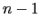
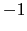

Next: Description of the MIPS Up: SPIM Previous: Assembler Syntax
.data
str: .asciiz "the answer = "
.text
li $v0, 4 # system call code for print_str
la $a0, str # address of string to print
syscall # print the string
li $v0, 1 # system call code for print_int
li $a0, 5 # integer to print
syscall # print it
print_int is passed an integer and prints it on the console. print_float prints a single floating point number. print_double prints a double precision number. print_string is passed a pointer to a null-terminated string, which it writes to the console. print_character prints a single ASCII character.
read_int, read_float, and read_double read an
entire line of input up to and including the newline. Characters
following the number are ignored. read_string has the same
semantics as the Unix library routine fgets. It reads up to
 characters into a buffer and terminates the string with a null
byte. If there are fewer characters on the current line, it reads
through the newline and again null-terminates the string. read_character reads a single ASCII character. Warning: programs that use these syscalls to read from the terminal
should not use memory-mapped IO (see Section ).
sbrk returns a pointer to a block of memory containing  additional
bytes. This pointer is word aligned. exit stops a program from
running. exit2 stops the program from running and takes an argument,
which is the value that spim or xspim uses in its call on exit.
additional
bytes. This pointer is word aligned. exit stops a program from
running. exit2 stops the program from running and takes an argument,
which is the value that spim or xspim uses in its call on exit.
open, read, write and close behave the same as the Unix system calls of the same name. They all return  on failure.
Ian Moor 2009-03-11